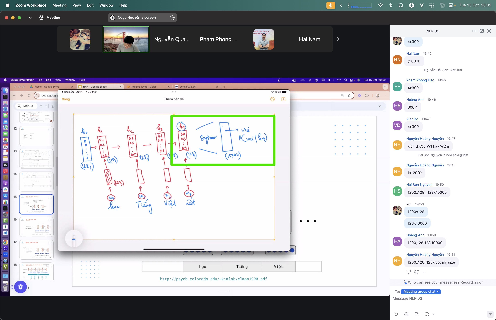
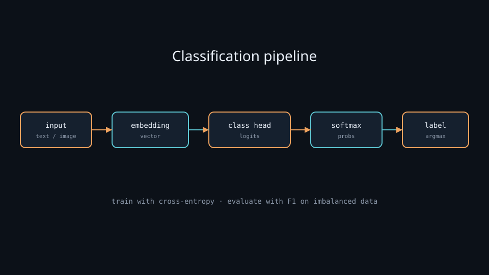
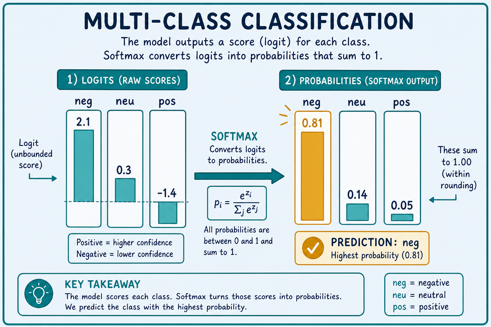

Classification
Assign a label to input — the most common model-building task, right after softmax.
Classification — Label The Input
Given an input (text, image, numbers), the model picks one label from a fixed set. Everyday example: a review arrives → the model says positive, neutral, or negative. This is the most common “build a model” problem — right after softmax.
Why it matters
Much practical work is categorization: is this review positive or negative, is the email spam, is the photo a dog or a cat, is the question easy or hard. Understanding classification is understanding how a model makes discrete decisions — and it reuses the same tokenize → embedding → softmax chain the lab walks through.
If you can train a solid classifier, you already understand loss, evaluation, and the train/infer split that every larger system (RAG routers, sentiment demos, car-nn) depends on.
Key ideas
- Classification head: the last layer turns a representation (vector) into a score per label (logits), then softmax converts to probabilities → pick the highest (
argmax). For a d-dim embedding and C classes, the head is typicallyW ∈ ℝ^{C×d}plus bias:logits = Wx + b. - Binary vs multi-class vs multi-label:
- Binary: two classes (spam / not spam). Often one logit + sigmoid, or two logits + softmax.
- Multi-class: pick exactly one of many (neg / neu / pos). Softmax + cross-entropy.
- Multi-label: one input can carry several labels at once (e.g. a news article tagged politics and economy). Usually independent sigmoids + binary cross-entropy per label.
- Training loss: cross-entropy measures how wrong the predicted probability is versus the true label; training pushes loss down (06-train-infer.md). For true class y, multi-class CE is
−log p_y(natural log); if the model assignsp_y = 0.81, loss ≈0.21, and ifp_y = 0.05, loss ≈3.0— wrong and confident is expensive. - Evaluation beyond accuracy: accuracy is easy but misleading on imbalanced data. Also check precision, recall, and F1. For rare classes (fraud, rare diseases), recall often matters more than overall accuracy. Formulas:
precision = TP/(TP+FP),recall = TP/(TP+FN),F1 = 2·P·R/(P+R). - Class balance: rare labels are easily ignored — the model can get 95% accuracy by always predicting the majority class. Always inspect the label distribution before trusting a score. Mitigations: class weights in the loss, oversample the rare class, or report macro-F1 (average F1 per class) instead of micro/accuracy.
- Calibration vs ranking: a model can rank classes correctly (
argmaxright) while probabilities are miscalibrated (e.g. “90%” when it is only right 70% of the time). For thresholded decisions or risk scores, check calibration (reliability diagrams) or use temperature scaling on a validation set.
Worked example
Input sentence: "The battery dies in two hours."
1. Tokenize → IDs → embedding → (optional Transformer) → one vector for the sentence.
2. Classification head → logits, e.g. [2.1, 0.3, −1.4] for {neg, neu, pos}.
3. Softmax → probabilities ≈ [0.81, 0.14, 0.05] (computed as e^{2.1} / (e^{2.1}+e^{0.3}+e^{−1.4}) ≈ 8.17 / 10.08).
4. Prediction = neg. During training, if the true label is neg, cross-entropy is −log(0.81) ≈ 0.21; if the true label were pos, loss would be −log(0.05) ≈ 3.0 and gradients would push the pos logit up and the others down.
Confusion-matrix sketch for a tiny val set of 100 reviews (true → predicted): say 40 true-neg with 36 correct, 30 true-neu with 20 correct, 30 true-pos with 25 correct → overall accuracy 81%, but neu recall is only 20/30 ≈ 0.67 — the class you should dig into next.
Common pitfalls
- Wrong metric on skewed data — report F1 / per-class recall, not only accuracy.
- Train/val leakage — same review appearing in both splits → fake high scores.
- Label noise — inconsistent human labels cap how good the model can get.
- Threshold blindness — for binary tasks, the default 0.5 cutoff may be wrong; tune on validation.
- Macro vs micro F1 mix-up — micro-F1 tracks overall correctness; macro-F1 treats rare classes as equal — pick the one that matches the product goal.
Illustrations






Deeper dive
- Logits are unbounded; probabilities are not. Softmax never outputs exact 0 or 1 in floating point, but near-zero probs still produce huge CE when the true class is missed. Clipping logits or using label smoothing (
ε ≈ 0.1) softens targets to(1−ε)on the true class andε/(C−1)elsewhere — often improves calibration on small datasets. - Binary: one logit + sigmoid vs two logits + softmax. Mathematically related: a single logit z with sigmoid equals a two-class softmax with logits
[0, z]up to a constant. Prefer one logit +BCEWithLogitsLoss/binary_crossentropy(from_logits=True)for binary; prefer C logits + CE for multi-class — fewer footguns than hand-rolling sigmoid on multi-class. - Imbalance math. With 95% majority / 5% minority, always-predict-majority accuracy is 0.95 while minority recall is 0. Weighted CE multiplies the rare-class term by
N / (C · n_c)(sklearn-stylebalanced). Compare: unweighted CE may sit at ~0.2 with useless minority recall; weighted CE raises train loss but lifts minority F1. - Multi-label ≠ multi-class. Softmax forces probabilities to sum to 1 (mutually exclusive). Multi-label needs independent sigmoids so politics and economy can both be high. Failure mode: applying softmax to multi-label tags collapses co-occurring labels.
- Thresholds and operating points. For binary spam, lower the threshold (e.g. 0.3 instead of 0.5) to raise recall at the cost of precision. Plot a precision–recall curve on validation; pick the point that matches cost (false negative vs false positive).
- Head-only vs full fine-tune. Freeze the encoder and train only the classification head when you have <1k labels or little GPU — fast, less overfitting. Unfreeze top Transformer layers (or full model with small LR
2e-5) when you have more data and need domain shift. - Failure modes to expect. (1) Confidence on OOD inputs (out-of-vocab slang, new product names) stays high — add an abstain / “unknown” path. (2) Label schema drift (3-class → 5-class) invalidates the old head. (3) Metric hacking: optimizing accuracy while the product needs per-class recall.
- Confusion-matrix triage order. When overall accuracy looks fine, sort classes by recall ascending and inspect the worst row first — that is usually where label noise, class imbalance, or a too-aggressive threshold hides. Fix one class schema issue before retuning the whole LR.
- Softmax temperature at serve time. Temperature
T > 1flattens probs (better calibration / softer thresholds);T < 1sharpens (more confident argmax). Apply only after training; retuningTon validation is cheaper than full retrain when the ranking is already good.
Decision guide
| Situation | Prefer | Avoid / why |
|---|---|---|
| Exactly one label from many (sentiment, intent) | Softmax + sparse CE; report accuracy and macro-F1 | Sigmoid-per-class without care — probs won’t form a proper distribution |
| Tags can co-occur (topics, attributes) | Independent sigmoid + BCE per label | Softmax — forces mutual exclusion |
| Rare positive class (fraud, defect) | Recall / PR-AUC; class weights or oversampling | Accuracy alone — majority baseline looks “good” |
| Need a deployable cutoff (spam filter) | Tune threshold on val PR curve | Fixed 0.5 — rarely matches business cost |
| <1k labeled examples, strong pretrained encoder | Freeze backbone, train head (or LoRA) | Full scratch train — overfits and wastes compute |
| Probabilities used as risk scores | Check calibration; temperature scale if needed | Trusting raw softmax as true probability |

Case study
Support-ticket triage for a SaaS inbox with three intents: billing, bug, how-to (~12 000 labeled tickets, ~70% how-to).
- Inputs: ticket subject + body (truncated to 256 tokens), integer labels
0..2, stratified 80/10/10 split; class weights ≈[1.4, 2.1, 0.7]because bugs are rare. - Steps: load a small Hub encoder → freeze backbone for 2 epochs (head LR
1e-3) → unfreeze with AdamW2e-5for 3 more → early-stop on macro-F1 (not accuracy). - Output: checkpoint with val macro-F1 ≈ 0.78, accuracy ≈ 0.88; confusion matrix shows
bugrecall ≈ 0.71 — still the weak class. - What you'd check: (1) majority baseline accuracy (~0.70) so 0.88 is real lift; (2) per-class recall, especially
bug; (3) no duplicate ticket IDs across splits; (4) threshold / abstain for low-max-prob tickets before routing to humans.
Lab checklist
- [ ] Plot the label histogram and write down the majority-class accuracy baseline
- [ ] Train a tiny head-only classifier, then compare macro-F1 vs accuracy on the same val set
- [ ] Build a 3×3 confusion matrix and identify the worst-recall class
- [ ] Sweep a binary threshold (or max-prob abstain) and record precision/recall at two operating points
- [ ] Induce label noise on 5% of train labels and measure how much val F1 drops
- [ ] Export the best-val checkpoint and re-run inference with
eval()/ no-grad only - [ ] Document which metric you would ship on (accuracy vs macro-F1) and why
Pipeline
input → embedding → classification head → softmax → label
(train: cross-entropy)
Classification is the destination of softmax.md; train it with pytorch-training.md or tensorflow-training.md. See it live in 05-demo-text.md and 04-demo-car.md.
Slides & demo
| Link | |
|---|---|
| Slides | slides/classification |
| Related demos | sentiment · car-nn |